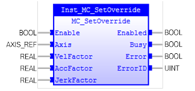
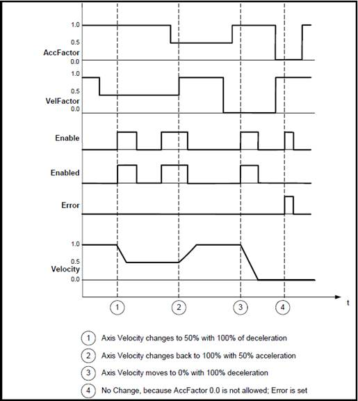

MC_SetOverride
Changes the motion speed of an axis.

Description:
MC_SetOverride sets the value of override for the whole
axis, and all functions that are working on that axis. The override parameters
contribute as a factor to the calculation of the commanded velocity,
acceleration, and jerk of the motion.
When ‘Enable’ to this instruction changes to FALSE,
‘Enabled’ and ‘Busy’ from this instruction change to FALSE.
The override factor is valid until a new override is set.
‘VelFactor’ can be changed at any time and acts directly on the ongoing motion.
The new target velocity is found with the following equation:
The target velocity after the change = Target velocity of
the current instruction × Override factor
Ÿ
Timing chart for execution of the MC_SetOverride and
MC_MoveVelocity instance is shown below.

The override factors apply to operation commands for new
target velocities, e.g. when you start a stopped axis, re-execute a motion
instruction, or perform multi-execution of motion control instructions.
If an axis error occurs during MC_SetOverride instruction
executing, the value of ‘Enabled’ for the MC_SetOverride instruction remains
TRUE.
The override factors are always updated when the instruction
is executed as long as ‘Enable’ remains TRUE.
If another instance of MC_SetOverride is executed for the
same axis during MC_SetOverride instruction execution, the last MC_SetOverride
instance that is executed takes priority in processing. ‘Enable’ will be TRUE
for both instructions. The override values of the instance will not change if
‘Enable’ is FALSE.
This instruction does not affect slave axis, such as slave
axes in MC_CamIn.
Values of < 0.0 are not allowed. The value 0.0 is not
allowed for ‘AccFactor’ and ‘JerkFactor’. If the inputs ‘VelFactor/ AccFactor /
JerkFactor’ > 1.0, it will generate an error and will not affect the axis’
motion.
Make sure the input and output parameters are of data type
indicated in the table below.
The Input AccFactor acts on positive and negative acceleration
(deceleration).
The default values of the override factor are 1.0.
The value of the overrides must be between 0.0 and 1.0. Value of 0.0
is not allowed for ‘AccFactor’ and ‘JerkFactor’.
‘VelFactor’ can be changed at any time and acts directly on the
ongoing motion.
‘VelFactor’ value of 0.0 will stop the axis without bringing it
to the state ‘Standstill’.
‘Override’ does not act on slave axes. (Axes in the state
synchronized motion).
MC_SetOverride does not affect the state diagram of an axis.
When in ‘Discrete’ motion, reducing the ‘AccFactor’ and/or
‘JerkFactor’ may lead to a position overshoot – it may cause damage.
Activating this Function Block on an axis has no effect on
MC_PositionProfile, MC_VelocityProfile, or MC_AccelerationProfile.
Inputs/Outputs:
|
Name
|
Data Type
|
Description
|
|
INPUTS
|
|
Enable
|
BOOL
|
It writes the value of the override
factor continuously when Enable = TRUE.
Otherwise, it keeps the last value.
|
|
Axis
|
AXIS_REF
|
Reference to the axis
|
|
VelFactor
|
REAL
|
New override factor for the velocity
|
|
AccFactor
|
REAL
|
New override factor for the
acceleration / deceleration
|
|
JerkFactor
|
REAL
|
New override factor for the jerk
|
|
OUTPUTS
|
|
Enabled
|
BOOL
|
Successful
assignment of the override values
|
|
Busy
|
BOOL
|
The
FB is not finished and new output values are to be expected
|
|
Error
|
BOOL
|
Signals
that an error has occurred within the FB
|
|
ErrorID
|
UINT
|
Error
identification
|
Examples:
Example 1:
|
 Example
Example
|
|
(*Example for
MC_SetPosition *)
inst_SetOverride ( Axis:=Axis0Ref,
Enable
:= bEnable,
VelFactor
:= rVeloF,
AccFactor
:= rAccF,
JerkFactor
:= rJerkF );
bEnabled := inst_SetOverride.Enabled;
bBusy := inst_SetOverride.Busy;
bError := inst_SetOverride.Error;
ErrorId := inst_SetOverride.ErrorID;
|
See also: